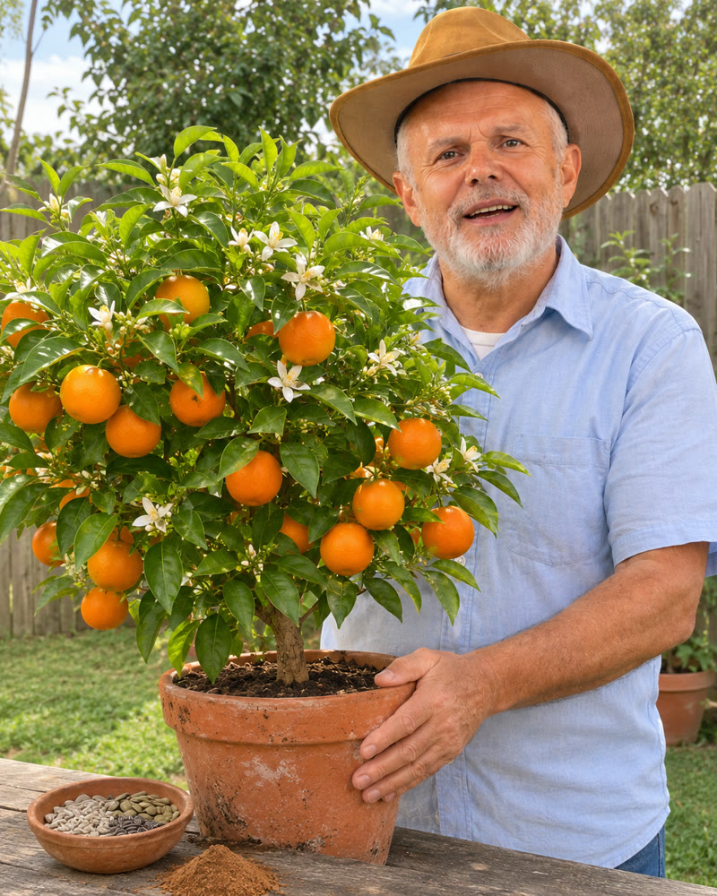

For backyard gardeners with fruit trees
Why Old Chinese Orchard Keepers Sprinkled This 3-Seed Powder Around Their Fruit Trees

Free video · Plays instantly · No sign-up needed
Your tree gets water, sun and fertilizer… so why does it only give you a handful of fruit each year?
A retired gardener stumbled onto an old orchard habit while traveling: a simple mix of three common seeds, ground into a powder and placed at the base of the tree.
He tried it on his own tired backyard trees. What happened over the next few weeks surprised even him.
He recorded a short video showing exactly what he did, and the results.